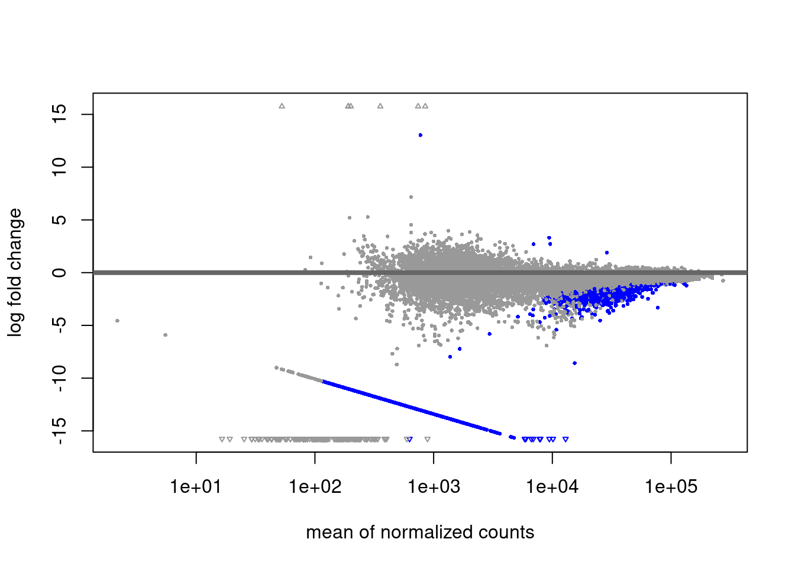
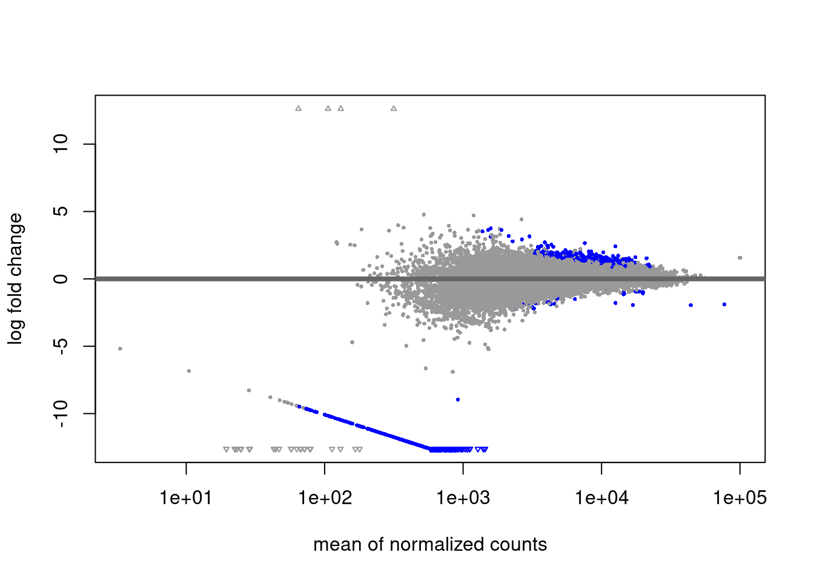
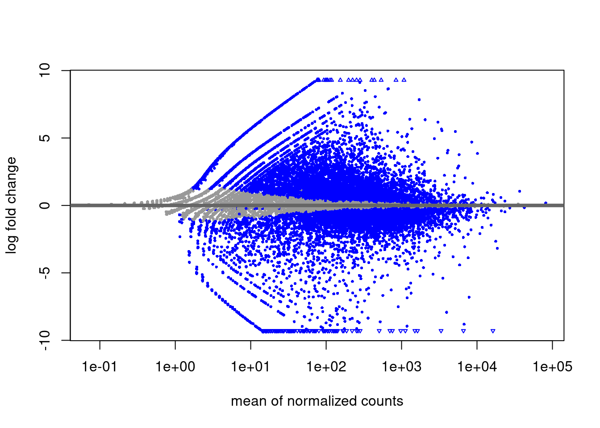
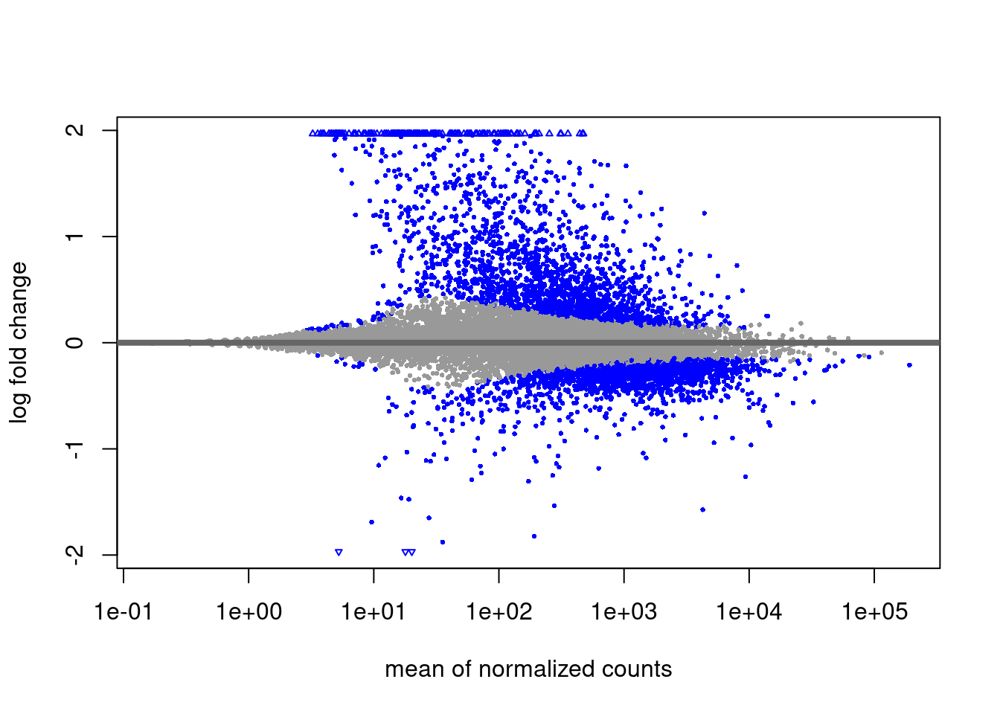

Master gene table
Carmen Navarro
2021-05-26
Last updated: 2021-07-02
Checks: 7 0
Knit directory: hesc-epigenomics/
This reproducible R Markdown analysis was created with workflowr (version 1.6.2). The Checks tab describes the reproducibility checks that were applied when the results were created. The Past versions tab lists the development history.
Great! Since the R Markdown file has been committed to the Git repository, you know the exact version of the code that produced these results.
Great job! The global environment was empty. Objects defined in the global environment can affect the analysis in your R Markdown file in unknown ways. For reproduciblity it’s best to always run the code in an empty environment.
The command set.seed(20210202) was run prior to running the code in the R Markdown file. Setting a seed ensures that any results that rely on randomness, e.g. subsampling or permutations, are reproducible.
Great job! Recording the operating system, R version, and package versions is critical for reproducibility.
Nice! There were no cached chunks for this analysis, so you can be confident that you successfully produced the results during this run.
Great job! Using relative paths to the files within your workflowr project makes it easier to run your code on other machines.
Great! You are using Git for version control. Tracking code development and connecting the code version to the results is critical for reproducibility.
The results in this page were generated with repository version b7be1cb. See the Past versions tab to see a history of the changes made to the R Markdown and HTML files.
Note that you need to be careful to ensure that all relevant files for the analysis have been committed to Git prior to generating the results (you can use wflow_publish or wflow_git_commit). workflowr only checks the R Markdown file, but you know if there are other scripts or data files that it depends on. Below is the status of the Git repository when the results were generated:
Ignored files:
Ignored: .Rhistory
Ignored: .Rproj.user/
Ignored: data/bed/
Ignored: data/bw
Ignored: data/igv/
Ignored: data/liftover/
Ignored: data/other/
Ignored: data/peaks
Ignored: data/rnaseq/
Ignored: figures_data/
Untracked files:
Untracked: data/meta/Kumar_2020_bins_panels_design.csv
Untracked: data/meta/Kumar_2020_master_bins_10kb_table_raw.tsv
Untracked: data/meta/Kumar_2020_master_bins_5kb_table_raw.tsv
Untracked: data/meta/Kumar_2020_master_bins_5kb_table_raw.zip
Untracked: data/meta/Kumar_2020_master_bins_5kb_table_replicates_only.tsv
Untracked: data/meta/Kumar_2020_master_bins_5kb_table_shrunk.tsv
Untracked: data/meta/Kumar_2020_master_bins_5kb_table_shrunk.zip
Untracked: data/meta/Kumar_2020_master_gene_table.zip
Untracked: data/meta/Kumar_2020_master_gene_table_rnaseq_shrunk.tsv
Untracked: data/meta/Kumar_2020_master_gene_table_rnaseq_shrunk_plus_annotations.tsv
Untracked: data/meta/Kumar_2020_master_gene_table_rnaseq_shrunk_plus_annotations.zip
Untracked: data/meta/Kumar_2020_promoters_panels_design.csv
Untracked: data/meta/gene_names_bivalent.tsv
Untracked: output/fig3_violin_rnaseq_ratios_naive_higher_than_pr.svg
Untracked: output/fig3_violin_rnaseq_ratios_primed_higher_than_ni.svg
Unstaged changes:
Modified: .gitignore
Note that any generated files, e.g. HTML, png, CSS, etc., are not included in this status report because it is ok for generated content to have uncommitted changes.
These are the previous versions of the repository in which changes were made to the R Markdown (analysis/master_gene_table.Rmd) and HTML (docs/master_gene_table.html) files. If you’ve configured a remote Git repository (see ?wflow_git_remote), click on the hyperlinks in the table below to view the files as they were in that past version.
| File | Version | Author | Date | Message |
|---|---|---|---|---|
| Rmd | b7be1cb | C. Navarro | 2021-07-02 | wflow_publish(“./analysis/master_gene_table.Rmd”, verbose = T) |
| html | 25d731d | cnluzon | 2021-05-27 | Build site. |
| Rmd | 3c72dd4 | cnluzon | 2021-05-27 | wflow_publish(“./analysis/master_gene_table.Rmd”) |
| html | 847f990 | cnluzon | 2021-05-26 | Build site. |
| Rmd | dc04f09 | cnluzon | 2021-05-26 | wflow_publish(“./analysis/master_gene_table.Rmd”, verbose = T) |
| html | 58564ac | cnluzon | 2021-05-26 | Build site. |
| Rmd | e6efbe9 | cnluzon | 2021-05-26 | wflow_publish(“./analysis/master_gene_table.Rmd”, verbose = T) |
Summary
This notebook shows how the master gene table is generated. Essentially, genes from hg38 human genome annotation are retrieved and the region around their TSS is scored for H3K4m3, H3K27m3 and H2AUb. DeSeq2 is applied in a Minute-ChIP specific manner and genes are annotated as differential across conditions: Primed vs Naïve, EZH2i treated Naïve vs Naïve and EZH2i treated Primed vs Primed. Final table includes these values, fold change differences and statistical significance scores for all genes.
Additionally, expression values are also used to do a DeSeq2 analysis and such scores are incorporated to the table.
- Gene annotation: Genes obtained from illumina iGenomes UCSC
hg38refFlat.txt file that was also used for the RNA-seq primary analysis: http://igenomes.illumina.com.s3-website-us-east-1.amazonaws.com/Homo_sapiens/UCSC/hg38/Homo_sapiens_UCSC_hg38.tar.gz
The annotation file used is the one coming from Annotations/Genes/refFlat.txt.
Additionally, since all isoforms available are annotated, one is selected per gene to do the TSS analysis. If corresponding identifier in knownCanonical from UCSC data tables exists, then corresponding isoform is used. If more than one identifier corresponds, the longest annotation is selected. For the rest, longest annotation is selected.
Helper functions
ni_pr_expression_analysis <- function(datadir, alpha = 0.05, shrink = TRUE) {
counts_file <- file.path(datadir, "rnaseq/Kumar_2020/rsem.merged.gene_counts.tsv")
c1_columns <- paste("Kumar_2020_Naive", c("R1", "R2", "R3"), sep = "_")
c2_columns <- paste("Kumar_2020_Primed", c("R1", "R2", "R3"), sep = "_")
rsem_deseq_analysis(counts_file, c1_columns, c2_columns, "Naive", "Primed", "Naive", alpha, shrink = shrink)
}
ni_ezh2i_expression_analysis <- function(datadir, alpha = 0.05, shrink = TRUE) {
counts_file <- file.path(datadir, "rnaseq/Kumar_2020/rsem.merged.gene_counts.tsv")
c1_columns <- paste("Kumar_2020_Naive", c("R1", "R2", "R3"), sep = "_")
c2_columns <- paste("Kumar_2020_Naive_EZH2i", c("R1", "R2", "R3"), sep = "_")
rsem_deseq_analysis(counts_file, c1_columns, c2_columns, "Naive", "EZH2i", "Naive", alpha, shrink = shrink)
}
pr_ezh2i_expression_analysis <- function(datadir, alpha = 0.05, shrink = TRUE) {
counts_file <- file.path(datadir, "rnaseq/Kumar_2020/rsem.merged.gene_counts.tsv")
c1_columns <- paste("Kumar_2020_Primed", c("R1", "R2", "R3"), sep = "_")
c2_columns <- paste("Kumar_2020_Primed_EZH2i", c("R1", "R2", "R3"), sep = "_")
rsem_deseq_analysis(counts_file, c1_columns, c2_columns, "Primed", "EZH2i", "Primed", alpha, shrink = shrink)
}
make_df <- function(diffres, name_suffix) {
df <- data.frame(diffres)
colnames(df) <- paste(colnames(df), name_suffix, sep = "_")
df$gene <- rownames(df)
df
}
make_label <- function(fnames) {
labs <- gsub("_pooled.hg38.*scaled.bw", "", basename(fnames))
# Remove the uncomfortable . in EZH2i elements
labs <- gsub("-", "_", labs)
labs <- gsub("H9_", "", labs)
paste(labs, "mean_cov", sep = "_")
}
merge_by_name <- function(lociset) {
mcols_df <- function(gr) { data.frame(mcols(gr)) }
dfs <- lapply(lociset, mcols_df)
dfs %>% reduce(full_join, by = "name")
}
make_diff_df <- function(diff_lfc, prefix) {
df_diff <- data.frame(diff_lfc)
# DS stands for DeSeq
colnames(df_diff) <- paste(prefix, colnames(df_diff), sep = "_")
df_diff$name <- rownames(df_diff)
df_diff
}Config analysis
# genes <- genes_hg38()
genes <- canonical_genes_hg38(file.path(params$datadir, "bed/Kumar_2020/refFlat.txt"),
file.path(params$datadir, "bed/Kumar_2020/knownCanonical.txt"))
export(genes, "./data/bed/Kumar_2020/Kumar_2020_genes_hg38_UCSC.bed")
genes_tss_broad <- promoters(genes, upstream = params$tss_wide, downstream = params$tss_wide)
genes_tss_narrow <- promoters(genes, upstream = params$tss_narrow, downstream = params$tss_narrow)
# bwfiles per histone mark
bwdir <- file.path(params$datadir, "bw/Kumar_2020")
bwfiles <-
list(
k4_naive = list.files(bwdir, pattern = "H3K4m3_H9_Ni_rep[1-3].hg38.scaled.bw", full.names = T),
k4_naive_ezh2i = list.files(bwdir, pattern = "H3K4m3_H9_Ni-EZH2i_rep[1-3].hg38.scaled.bw", full.names = T),
k4_primed = list.files(bwdir, pattern = "H3K4m3_H9_Pr_rep[1-3].hg38.scaled.bw", full.names = T),
k4_primed_ezh2i = list.files(bwdir, pattern = "H3K4m3_H9_Pr-EZH2i_rep[1-3].hg38.scaled.bw", full.names = T),
k27_naive = list.files(bwdir, pattern = "H3K27m3_H9_Ni_rep[1-3].hg38.scaled.bw", full.names = T),
k27_primed = list.files(bwdir, pattern = "H3K27m3_H9_Pr_rep[1-3].hg38.scaled.bw", full.names = T),
ub_naive = list.files(bwdir, pattern = "H2Aub_H9_Ni_rep[1-3].hg38.scaled.bw", full.names = T),
ub_naive_ezh2i = list.files(bwdir, pattern = "H2Aub_H9_Ni-EZH2i_rep[1-3].hg38.scaled.bw", full.names = T),
ub_primed = list.files(bwdir, pattern = "H2Aub_H9_Pr_rep[1-3].hg38.scaled.bw", full.names = T),
ub_primed_ezh2i = list.files(bwdir, pattern = "H2Aub_H9_Pr-EZH2i_rep[1-3].hg38.scaled.bw", full.names = T),
in_naive = list.files(bwdir, pattern = "IN_H9_Ni.*rep[1-3].hg38.*.bw", full.names = T),
in_naive_ezh2i = list.files(bwdir, pattern = "IN_H9_Ni-EZH2i.*rep[1-3].hg38.*.bw", full.names = T),
in_primed = list.files(bwdir, pattern = "IN_H9_Pr_rep[1-3].hg38.*.bw", full.names = T),
in_primed_ezh2i = list.files(bwdir, pattern = "IN_H9_Pr-EZH2i.*rep[1-3].hg38.*.bw", full.names = T)
)
bwfiles_pooled <-
list(
k4 = list.files(bwdir, pattern = "H3K4m3.*pooled.hg38.scaled.*", full.names = T),
k27 = list.files(bwdir, pattern = "H3K27m3.*pooled.hg38.scaled.*", full.names = T),
ub = list.files(bwdir, pattern = "H2Aub.*pooled.hg38.scaled.*", full.names = T),
input = list.files(bwdir, pattern = "IN.*pooled.hg38.*", full.names = T)
)
sorted_colors <- unname(c(gl_condition_colors["Naive_Untreated"],
gl_condition_colors["Naive_EZH2i"],
gl_condition_colors["Primed_Untreated"],
gl_condition_colors["Primed_EZH2i"]))
grey_colors <- c("#cccccc", "#aaaaaa", "#888888", "#555555")Raw pooled values at TSS per gene
At this point kept area around TSS the same size even though K4 is narrower, so it’s fairer to put them all in the same table.
pooled_k4 <- bw_loci(bwfiles_pooled$k4, genes_tss_broad, labels = make_label(bwfiles_pooled$k4))
pooled_k27 <- bw_loci(bwfiles_pooled$k27, genes_tss_broad, labels = make_label(bwfiles_pooled$k27))
pooled_h2aub <- bw_loci(bwfiles_pooled$ub, genes_tss_broad, labels = make_label(bwfiles_pooled$ub))
pooled_inp <- bw_loci(bwfiles_pooled$input, genes_tss_broad, labels = make_label(bwfiles_pooled$input))
pooled_df <- merge_by_name(list(pooled_k4, pooled_k27, pooled_h2aub, pooled_inp))
master_df <- pooled_dfK27m3 diff analysis
Primed vs Naive
c1 <- bw_loci(bwfiles$k27_naive, genes_tss_broad)
c2 <- bw_loci(bwfiles$k27_primed, genes_tss_broad)
diff <- bw_granges_diff_analysis(c1, c2, "Naive", "Primed", estimate_size_factors = FALSE)
if (params$shrink_histones == TRUE) {
diff_lfc <- lfcShrink(diff, coef="condition_Primed_vs_Naive", type="apeglm")
diff <- diff_lfc
} else {
diff <- results(diff, alpha = params$pval_cutoff)
}
plotMA(diff)
| Version | Author | Date |
|---|---|---|
| 58564ac | cnluzon | 2021-05-26 |
df_diff <- make_diff_df(diff, "H3K27m3_DS_Pr_vs_Ni")
master_df <- left_join(master_df, df_diff, by = "name")H3K4m3 diff analysis
Primed vs Naive
c1 <- bw_loci(bwfiles$k4_naive, genes_tss_narrow)
c2 <- bw_loci(bwfiles$k4_primed, genes_tss_narrow)
diff <- bw_granges_diff_analysis(c1, c2, "Naive", "Primed", estimate_size_factors = FALSE)
if (params$shrink_histones == TRUE) {
diff_lfc <- lfcShrink(diff, coef="condition_Primed_vs_Naive", type="apeglm")
diff <- diff_lfc
} else {
diff <- results(diff, alpha = params$pval_cutoff)
}
plotMA(diff)
| Version | Author | Date |
|---|---|---|
| 58564ac | cnluzon | 2021-05-26 |
df_diff <- make_diff_df(diff, "H3K4m3_DS_Pr_vs_Ni")
master_df <- left_join(master_df, df_diff, by = "name")EZH2i vs Naive
c1 <- bw_loci(bwfiles$k4_naive, genes_tss_narrow)
c2 <- bw_loci(bwfiles$k4_naive_ezh2i, genes_tss_narrow)
diff <- bw_granges_diff_analysis(c1, c2, "Naive", "EZH2i", estimate_size_factors = FALSE)
if (params$shrink_histones == TRUE) {
diff_lfc <- lfcShrink(diff, coef="condition_EZH2i_vs_Naive", type="apeglm")
diff <- diff_lfc
} else {
diff <- results(diff, alpha = params$pval_cutoff)
}
plotMA(diff)
| Version | Author | Date |
|---|---|---|
| 58564ac | cnluzon | 2021-05-26 |
#
df_diff <- make_diff_df(diff, "H3K4m3_DS_EZH2i_vs_Ni")
master_df <- left_join(master_df, df_diff, by = "name")EZH2i vs Primed
c1 <- bw_loci(bwfiles$k4_primed, genes_tss_narrow)
c2 <- bw_loci(bwfiles$k4_primed_ezh2i, genes_tss_narrow)
diff <- bw_granges_diff_analysis(c1, c2, "Primed", "EZH2i", estimate_size_factors = FALSE)
if (params$shrink_histones == TRUE) {
diff_lfc <- lfcShrink(diff, coef="condition_EZH2i_vs_Primed", type="apeglm")
diff <- diff_lfc
} else {
diff <- results(diff, alpha = params$pval_cutoff)
}
plotMA(diff)
| Version | Author | Date |
|---|---|---|
| 58564ac | cnluzon | 2021-05-26 |
#
df_diff <- make_diff_df(diff, "H3K4m3_DS_EZH2i_vs_Pr")
master_df <- left_join(master_df, df_diff, by = "name")H2AUb diff analysis
Primed vs Naive
c1 <- bw_loci(bwfiles$ub_naive, genes_tss_broad)
c2 <- bw_loci(bwfiles$ub_primed, genes_tss_broad)
diff <- bw_granges_diff_analysis(c1, c2, "Naive", "Primed", estimate_size_factors = FALSE)
if (params$shrink_histones == TRUE) {
diff_lfc <- lfcShrink(diff, coef="condition_Primed_vs_Naive", type="apeglm")
diff <- diff_lfc
} else {
diff <- results(diff, alpha = params$pval_cutoff)
}
plotMA(diff)
| Version | Author | Date |
|---|---|---|
| 58564ac | cnluzon | 2021-05-26 |
df_diff <- make_diff_df(diff, "H2Aub_DS_Pr_vs_Ni")
master_df <- left_join(master_df, df_diff, by = "name")EZH2i vs Naive
c1 <- bw_loci(bwfiles$ub_naive, genes_tss_broad)
c2 <- bw_loci(bwfiles$ub_naive_ezh2i, genes_tss_broad)
diff <- bw_granges_diff_analysis(c1, c2, "Naive", "EZH2i", estimate_size_factors = FALSE)
if (params$shrink_histones == TRUE) {
diff_lfc <- lfcShrink(diff, coef="condition_EZH2i_vs_Naive", type="apeglm")
diff <- diff_lfc
} else {
diff <- results(diff, alpha = params$pval_cutoff)
}
plotMA(diff)
| Version | Author | Date |
|---|---|---|
| 58564ac | cnluzon | 2021-05-26 |
df_diff <- make_diff_df(diff, "H2Aub_DS_EZH2i_vs_Ni")
master_df <- left_join(master_df, df_diff, by = "name")EZH2i vs Primed
c1 <- bw_loci(bwfiles$ub_primed, genes_tss_broad)
c2 <- bw_loci(bwfiles$ub_primed_ezh2i, genes_tss_broad)
diff <- bw_granges_diff_analysis(c1, c2, "Primed", "EZH2i", estimate_size_factors = FALSE)
if (params$shrink_histones == TRUE) {
diff_lfc <- lfcShrink(diff, coef="condition_EZH2i_vs_Primed", type="apeglm")
diff <- diff_lfc
} else {
diff <- results(diff, alpha = params$pval_cutoff)
}
plotMA(diff)
| Version | Author | Date |
|---|---|---|
| 58564ac | cnluzon | 2021-05-26 |
df_diff <- make_diff_df(diff, "H2Aub_DS_EZH2i_vs_Pr")
master_df <- left_join(master_df, df_diff, by = "name")RNA-seq diff analysis
Primed vs Naive
ni_pr_diff <- ni_pr_expression_analysis(params$datadir, alpha = params$pval_cutoff, shrink = params$shrink_rnaseq)
plotMA(ni_pr_diff)
| Version | Author | Date |
|---|---|---|
| 58564ac | cnluzon | 2021-05-26 |
EZH2i vs Naive
ni_ezh2i_diff <- ni_ezh2i_expression_analysis(params$datadir, alpha = params$pval_cutoff, shrink = params$shrink_rnaseq)
plotMA(ni_ezh2i_diff)
| Version | Author | Date |
|---|---|---|
| 58564ac | cnluzon | 2021-05-26 |
EZH2i vs Primed
pr_ezh2i_diff <- pr_ezh2i_expression_analysis(params$datadir, alpha = params$pval_cutoff, shrink = params$shrink_rnaseq)
plotMA(pr_ezh2i_diff)
| Version | Author | Date |
|---|---|---|
| 58564ac | cnluzon | 2021-05-26 |
Expression table
counts_file <- file.path(params$datadir, "rnaseq/Kumar_2020/rsem.merged.gene_tpm.tsv")
tpm_counts <- read.table(counts_file, sep = "\t", header = TRUE)
columns <- colnames(tpm_counts)[!colnames(tpm_counts) %in% c("transcript_id.s.")]
tpm_counts <- tpm_counts[, columns]
new_values <- paste("RNASeq_TPM",
gsub("Kumar_2020_", "", columns[2:length(columns)]), sep = "_")
new_values <- gsub("Naive", "Ni", new_values)
new_values <- gsub("Primed", "Pr", new_values)
new_columns <- c("name", new_values)
colnames(tpm_counts) <- new_columns
make_df <- function(diffres, name_suffix) {
df <- data.frame(diffres)
colnames(df) <- paste(colnames(df), name_suffix, sep = "_")
df$gene <- rownames(df)
df
}
dfs <- list(make_diff_df(ni_pr_diff, "RNASeq_DS_Pr_vs_Ni"),
make_diff_df(ni_ezh2i_diff, "RNASeq_DS_EZH2i_vs_Ni"),
make_diff_df(pr_ezh2i_diff, "RNASeq_DS_EZH2i_vs_Pr"),
tpm_counts)
expr_results_all <- reduce(dfs, full_join, by = "name")Final table
final <- full_join(master_df, expr_results_all, by = "name")
# Add TSS broad coords
loci <- data.frame(genes_tss_broad)
final <- full_join(final, loci, by = "name")
columns <- colnames(final)
order <-
c(c("name", "seqnames", "start", "end", "strand"),
sort(columns[!(columns %in% c("name", "seqnames", "start", "end", "strand"))]))
filename <- "./data/meta/Kumar_2020_master_gene_table"
if (params$shrink_rnaseq == TRUE) {
filename <- paste(filename, "rnaseq_shrunk", sep = "_")
}
if (params$shrink_histones == TRUE) {
filename <- paste(filename, "hist_shrunk", sep = "_")
}
filename <- paste0(filename, ".tsv")
write.table(
format(final[, order], digits = 4),
file = filename,
sep = "\t",
col.names = T,
quote = F,
row.names = F
)
sessionInfo()R version 4.1.0 (2021-05-18)
Platform: x86_64-pc-linux-gnu (64-bit)
Running under: Ubuntu 20.04.2 LTS
Matrix products: default
BLAS: /usr/lib/x86_64-linux-gnu/openblas-pthread/libblas.so.3
LAPACK: /usr/lib/x86_64-linux-gnu/openblas-pthread/liblapack.so.3
locale:
[1] LC_CTYPE=en_US.UTF-8 LC_NUMERIC=C
[3] LC_TIME=sv_SE.UTF-8 LC_COLLATE=en_US.UTF-8
[5] LC_MONETARY=sv_SE.UTF-8 LC_MESSAGES=en_US.UTF-8
[7] LC_PAPER=sv_SE.UTF-8 LC_NAME=C
[9] LC_ADDRESS=C LC_TELEPHONE=C
[11] LC_MEASUREMENT=sv_SE.UTF-8 LC_IDENTIFICATION=C
attached base packages:
[1] stats4 parallel stats graphics grDevices utils datasets
[8] methods base
other attached packages:
[1] biomaRt_2.48.1
[2] DESeq2_1.32.0
[3] SummarizedExperiment_1.22.0
[4] MatrixGenerics_1.4.0
[5] matrixStats_0.59.0
[6] tidyr_1.1.3
[7] cowplot_1.1.1
[8] xfun_0.24
[9] dplyr_1.0.7
[10] purrr_0.3.4
[11] rtracklayer_1.52.0
[12] org.Hs.eg.db_3.13.0
[13] TxDb.Hsapiens.UCSC.hg38.knownGene_3.13.0
[14] GenomicFeatures_1.44.0
[15] AnnotationDbi_1.54.1
[16] Biobase_2.52.0
[17] GenomicRanges_1.44.0
[18] GenomeInfoDb_1.28.0
[19] IRanges_2.26.0
[20] S4Vectors_0.30.0
[21] BiocGenerics_0.38.0
[22] knitr_1.33
[23] ggplot2_3.3.5
[24] wigglescout_0.13.1
[25] workflowr_1.6.2
loaded via a namespace (and not attached):
[1] colorspace_2.0-2 rjson_0.2.20 ellipsis_0.3.2
[4] rprojroot_2.0.2 XVector_0.32.0 fs_1.5.0
[7] listenv_0.8.0 furrr_0.2.3 bit64_4.0.5
[10] mvtnorm_1.1-2 apeglm_1.14.0 fansi_0.5.0
[13] xml2_1.3.2 splines_4.1.0 codetools_0.2-18
[16] cachem_1.0.5 geneplotter_1.70.0 jsonlite_1.7.2
[19] Rsamtools_2.8.0 annotate_1.70.0 dbplyr_2.1.1
[22] png_0.1-7 compiler_4.1.0 httr_1.4.2
[25] assertthat_0.2.1 Matrix_1.3-4 fastmap_1.1.0
[28] later_1.2.0 htmltools_0.5.1.1 prettyunits_1.1.1
[31] tools_4.1.0 coda_0.19-4 gtable_0.3.0
[34] glue_1.4.2 GenomeInfoDbData_1.2.6 reshape2_1.4.4
[37] rappdirs_0.3.3 Rcpp_1.0.6 bbmle_1.0.23.1
[40] jquerylib_0.1.4 vctrs_0.3.8 Biostrings_2.60.1
[43] stringr_1.4.0 globals_0.14.0 lifecycle_1.0.0
[46] restfulr_0.0.13 XML_3.99-0.6 future_1.21.0
[49] MASS_7.3-54 zlibbioc_1.38.0 scales_1.1.1
[52] hms_1.1.0 promises_1.2.0.1 RColorBrewer_1.1-2
[55] yaml_2.2.1 curl_4.3.2 memoise_2.0.0
[58] emdbook_1.3.12 sass_0.4.0 bdsmatrix_1.3-4
[61] stringi_1.6.2 RSQLite_2.2.7 highr_0.9
[64] genefilter_1.74.0 BiocIO_1.2.0 filelock_1.0.2
[67] BiocParallel_1.26.0 rlang_0.4.11 pkgconfig_2.0.3
[70] bitops_1.0-7 evaluate_0.14 lattice_0.20-44
[73] GenomicAlignments_1.28.0 bit_4.0.4 tidyselect_1.1.1
[76] parallelly_1.26.1 plyr_1.8.6 magrittr_2.0.1
[79] R6_2.5.0 generics_0.1.0 DelayedArray_0.18.0
[82] DBI_1.1.1 pillar_1.6.1 whisker_0.4
[85] withr_2.4.2 survival_3.2-11 KEGGREST_1.32.0
[88] RCurl_1.98-1.3 tibble_3.1.2 crayon_1.4.1
[91] utf8_1.2.1 BiocFileCache_2.0.0 rmarkdown_2.9
[94] progress_1.2.2 locfit_1.5-9.4 grid_4.1.0
[97] blob_1.2.1 git2r_0.28.0 digest_0.6.27
[100] xtable_1.8-4 numDeriv_2016.8-1.1 httpuv_1.6.1
[103] munsell_0.5.0 bslib_0.2.5.1